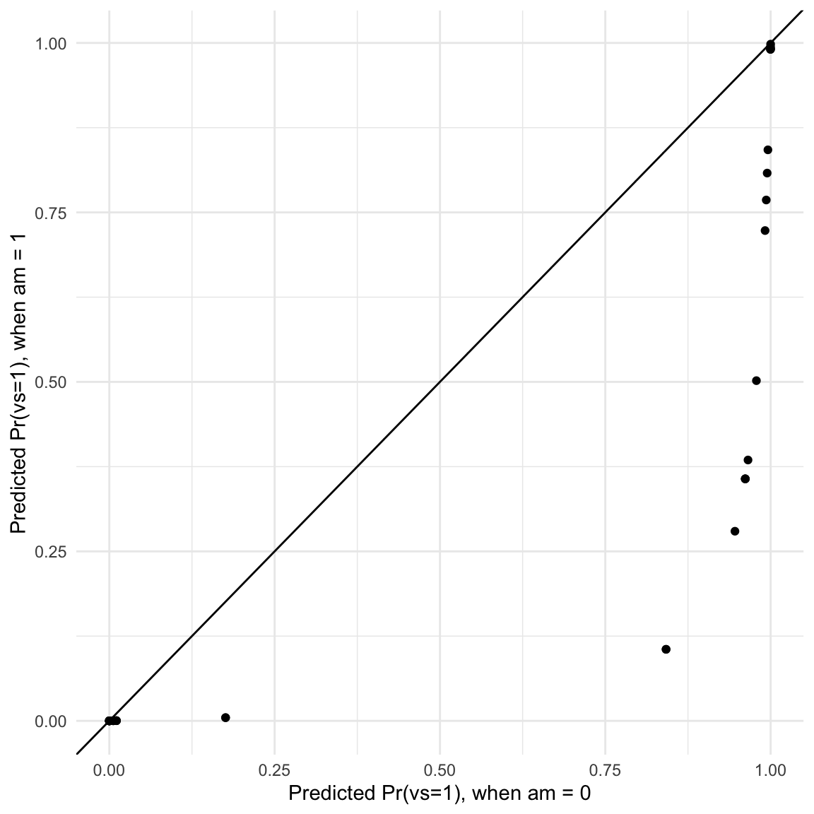
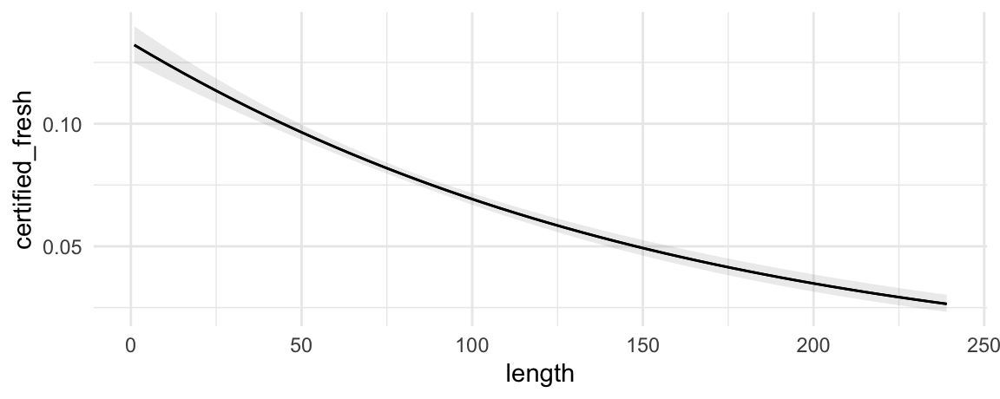
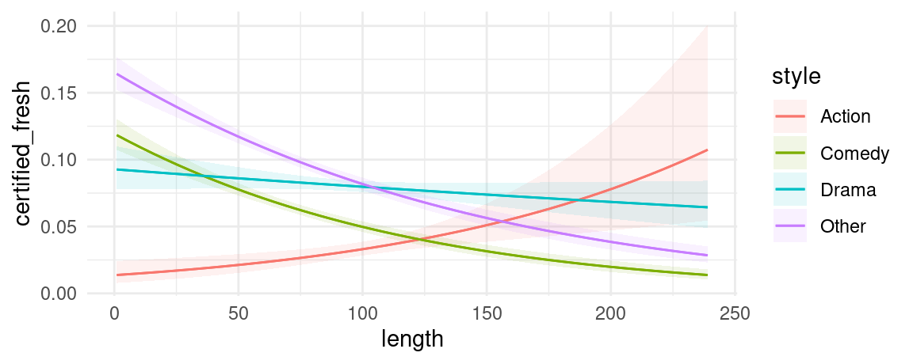
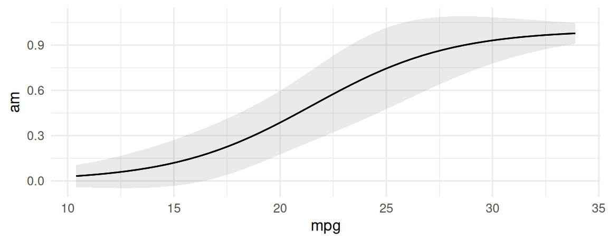
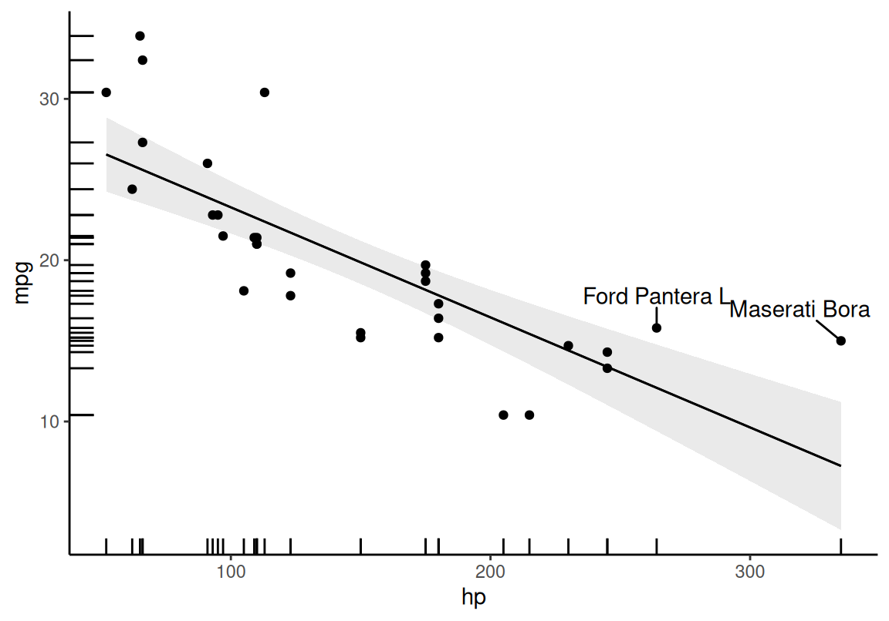
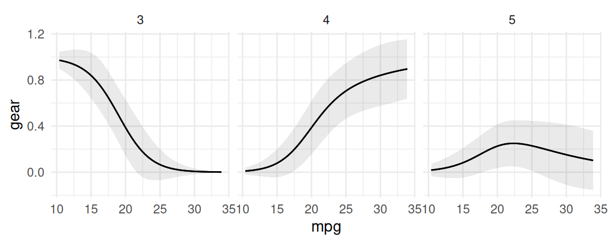

library(marginaleffects)
lm_mod <- lm(mpg ~ hp + factor(cyl), data = mtcars)
pred <- predictions(lm_mod)
head(pred)
#>
#> Estimate Std. Error z Pr(>|z|) S 2.5 % 97.5 %
#> 20.0 1.204 16.6 <0.001 204.1 17.7 22.4
#> 20.0 1.204 16.6 <0.001 204.1 17.7 22.4
#> 26.4 0.962 27.5 <0.001 549.0 24.5 28.3
#> 20.0 1.204 16.6 <0.001 204.1 17.7 22.4
#> 15.9 0.992 16.0 <0.001 190.0 14.0 17.9
#> 20.2 1.219 16.5 <0.001 201.8 17.8 22.5
#>
#> Type: response
#> Columns: rowid, estimate, std.error, statistic, p.value, s.value, conf.low, conf.high, mpg, hp, cylPredictions

Definition and motivation
In the context of this package, an “adjusted prediction” is defined as:
The outcome predicted by a fitted model on a specified scale for a given combination of values of the predictor variables, such as their observed values, their means, or factor levels (a.k.a. “reference grid”).
Here, the word “Adjusted” simply means “model-derived” or “model-based.”
Estimating predictions can allow us to answer a variety of important questions, such as:
- Healthcare Research: What is the expected probability of a 50-year-old smoker developing heart disease, adjusting for diet, exercise, and family history factors?
- Sports Analytics: What is the expected probability of a professional basketball team winning their next game, taking into account the team’s recent performance, injuries, and the strength of the opposing team?
- Political Science: What is the expected turnout for elections in rural and urban areas, adjusting for national voting intentions and democratic characteristics.
- Real Estate Pricing: What is the expected price for a three-bedroom house in a suburban area, adjusting for the house’s size, age, local amenities, and the current real estate market conditions?
In addition, the marginaleffects package allows analysts to conduct hypothesis tests to compare different predictions. As we will see below, the hypothesis argument of the predictions() function can test questions such as:
- Is the expected probability of developing a heart disease higher for a 40 year old man, or for a 55 year old woman?
- Is the expected grade point average of students in a 20-person class higher than the expected grade point average of students in a 30-person class, accounting for socio-demographic characteristics?
The predictions() function is extremely flexible, and it allows users to estimate a vast array of quantities of interest. To describe those quantities, this vignette breaks the problem down into 5 steps:
- Quantity
- Grid
- Aggregation
- Uncertainty
- Test
Quantity of interest
By default, the predictions() function calculates the regression-adjusted predicted values for every observation in the original dataset:
In many cases, this is too limiting. The function predictions() allows to specify a grid of ‘typical’ values over which to compute adjusted predictions. For more details, proceed to the Grid section.
Prediction type (scale)
For most models, predictions() generates adjusted predictions on the “response” scale, so the adjusted predictions should be interpreted on that scale. However, users can pass a string to the type argument, and predictions will consider different outcomes.
Using the type argument of the predictions() function we can specify the “scale” on which to make predictions. This refers to either the scale used to estimate the model (i.e., link scale) or to a more interpretable scale (e.g., response scale). For example, when fitting a linear regression model using the lm() function, the "link" scale and the response scale are identical. An “Adjusted Prediction” computed on either scale will be expressed as the mean value of the response variable at the given values of the predictor variables.
On the other hand, when fitting a binary logistic regression model using the glm() function (which uses a binomial family and a logit link ), the link scale and the response scale will be different: an “Adjusted Prediction” computed on the "link" scale will be expressed as a log odds of a “successful” response at the given values of the predictor variables, whereas an “Adjusted Prediction” computed on the "response" scale will be expressed as a probability that the response variable equals 1.
glm_mod <- glm(am ~ mpg, family = binomial, data = mtcars)
pred <- predictions(glm_mod, type = "response")
head(pred)
#>
#> Estimate Std. Error z Pr(>|z|) S 2.5 % 97.5 %
#> 0.461 0.1158 3.98 < 0.001 13.8 0.2341 0.688
#> 0.461 0.1158 3.98 < 0.001 13.8 0.2341 0.688
#> 0.598 0.1324 4.52 < 0.001 17.3 0.3384 0.857
#> 0.492 0.1196 4.11 < 0.001 14.6 0.2573 0.726
#> 0.297 0.1005 2.95 0.00314 8.3 0.0999 0.494
#> 0.260 0.0978 2.66 0.00788 7.0 0.0682 0.452
#>
#> Type: response
#> Columns: rowid, estimate, std.error, statistic, p.value, s.value, conf.low, conf.high, am, mpg
pred <- predictions(glm_mod, type = "link")
head(pred)
#>
#> Estimate Std. Error z Pr(>|z|) S 2.5 % 97.5 %
#> -0.1559 0.466 -0.3345 0.7380 0.4 -1.070 0.7578
#> -0.1559 0.466 -0.3345 0.7380 0.4 -1.070 0.7578
#> 0.3967 0.551 0.7204 0.4713 1.1 -0.683 1.4761
#> -0.0331 0.479 -0.0692 0.9448 0.1 -0.971 0.9049
#> -0.8621 0.482 -1.7903 0.0734 3.8 -1.806 0.0817
#> -1.0463 0.509 -2.0575 0.0396 4.7 -2.043 -0.0496
#>
#> Type: link
#> Columns: rowid, estimate, std.error, statistic, p.value, s.value, conf.low, conf.high, am, mpgThe default value of the type argument for most models is "response", which means that the predictions() function will compute predicted probabilities (binomial family), Poisson means (poisson family), etc. Users should refer to the documentation of the predict of the package they used to fit the model to know what values are allowable.
Grid
A “profile” is a combination of values of the predictor variables in a model. A “grid” is a collection of one or more profiles. You can think of a “grid” as different rows in a dataset, where each row contains the information necessary to predict the outcome for one individual or unit of observation.
To compute adjusted predictions we must first specify the values of the predictors to consider: a “reference grid.” For example, if our model is a linear model fitted with the lm() function which relates the response variable Happiness with the predictor variables Age, Gender and Income, the reference grid could be a data.frame with values for Age, Gender and Income: Age = 40, Gender = Male, Income = 60000. The reference grid can include many different rows if we want to make predictions for different combinations of predictors. The reference grid may or may not correspond to actual observations in the dataset used to fit the model; the example values given above could match the mean values of each variable, or they could represent a specific observed (or hypothetical) individual.
Empirical distribution
By default, the predictions() function uses the full original dataset as a reference grid. This means it will compute adjusted predictions for each of the individuals observed in the dataset that was used to fit the model:
predictions(lm_mod)
#>
#> Estimate Std. Error z Pr(>|z|) S 2.5 % 97.5 %
#> 20.0 1.204 16.64 <0.001 204.1 17.68 22.4
#> 20.0 1.204 16.64 <0.001 204.1 17.68 22.4
#> 26.4 0.962 27.46 <0.001 549.0 24.53 28.3
#> 20.0 1.204 16.64 <0.001 204.1 17.68 22.4
#> 15.9 0.992 16.04 <0.001 190.0 13.98 17.9
#> --- 22 rows omitted. See ?avg_predictions and ?print.marginaleffects ---
#> 25.9 1.058 24.52 <0.001 438.6 23.86 28.0
#> 13.8 1.191 11.57 <0.001 100.4 11.45 16.1
#> 18.5 1.440 12.83 <0.001 122.7 15.65 21.3
#> 12.1 2.113 5.72 <0.001 26.5 7.94 16.2
#> 26.0 1.032 25.22 <0.001 464.0 24.01 28.1
#> Type: response
#> Columns: rowid, estimate, std.error, statistic, p.value, s.value, conf.low, conf.high, mpg, hp, cylUser-specified values
There are two main ways to select the reference grid over which we want to compute adjusted predictions. The first is using the newdata argument and the datagrid() function. The second is with the variables argument.
We can also create a counterfactual data grid with the argument grid_type = "counterfactual". The dataset is duplicated for each combination of the variable values specified in. Variables not explicitly supplied to datagrid() are set to their observed values in the original dataset. There is also an alternative approach to construct grids of predictors using the grid_type = "counterfactual" argument value.
The first strategy is to construct grids of predictors for adjusted predictions is to combine the newdata argument and the datagrid function. This function creates a “typical” dataset with all variables at their means or modes, except those we explicitly define:
We can also use this datagrid function in a predictions call (omitting the model argument):
predictions(lm_mod, newdata = datagrid())
#>
#> Estimate Std. Error z Pr(>|z|) S 2.5 % 97.5 % hp cyl
#> 16.6 1.28 13 <0.001 125.6 14.1 19.1 147 8
#>
#> Type: response
#> Columns: rowid, estimate, std.error, statistic, p.value, s.value, conf.low, conf.high, hp, cyl, mpg
predictions(lm_mod, newdata = datagrid(cyl = c(4, 6, 8)))
#>
#> cyl Estimate Std. Error z Pr(>|z|) S 2.5 % 97.5 % hp
#> 4 25.1 1.37 18.4 <0.001 247.5 22.4 27.8 147
#> 6 19.2 1.25 15.4 <0.001 174.5 16.7 21.6 147
#> 8 16.6 1.28 13.0 <0.001 125.6 14.1 19.1 147
#>
#> Type: response
#> Columns: rowid, estimate, std.error, statistic, p.value, s.value, conf.low, conf.high, hp, cyl, mpgUsers can change the summary function used to summarize each type of variables using the FUN_numeric, FUN_factor, and related arguments. For example:
m <- lm(mpg ~ hp + drat + factor(cyl) + factor(am), data = mtcars)
predictions(m, newdata = datagrid(FUN_factor = unique, FUN_numeric = median))
#>
#> Estimate Std. Error z Pr(>|z|) S 2.5 % 97.5 % hp drat cyl am
#> 18.9 1.73 10.9 <0.001 89.0 15.5 22.3 123 3.7 8 0
#>
#> Type: response
#> Columns: rowid, estimate, std.error, statistic, p.value, s.value, conf.low, conf.high, hp, drat, cyl, am, mpgThe data.frame produced by predictions is “tidy”, which makes it easy to manipulate with other R packages and functions:
library(tinytable)
library(tidyverse)
predictions(
lm_mod,
newdata = datagrid(cyl = mtcars$cyl, hp = c(100, 110))) |>
select(hp, cyl, estimate) |>
pivot_wider(values_from = estimate, names_from = cyl) |>
tt(caption = "A table of Adjusted Predictions", digits = 3) |>
group_tt(j = list("cyl" = 3))| cyl | |||
|---|---|---|---|
| hp | 6 | 4 | 8 |
| 100 | 20.3 | 26.2 | 17.7 |
| 110 | 20 | 26 | 17.5 |
Representative values
Some analysts may want to calculate an “Adjusted Prediction at the Mean,” that is, the predicted outcome when all the regressors are held at their mean (or mode). To achieve this, we use the datagrid function. By default, this function produces a grid of data with regressors at their means or modes, so all we need to do to get the APM is:
predictions(lm_mod, newdata = "mean")
#>
#> Estimate Std. Error z Pr(>|z|) S 2.5 % 97.5 % hp cyl
#> 16.6 1.28 13 <0.001 125.6 14.1 19.1 147 8
#>
#> Type: response
#> Columns: rowid, estimate, std.error, statistic, p.value, s.value, conf.low, conf.high, hp, cyl, mpgThis is equivalent to calling:
predictions(lm_mod, newdata = datagrid())
#>
#> Estimate Std. Error z Pr(>|z|) S 2.5 % 97.5 % hp cyl
#> 16.6 1.28 13 <0.001 125.6 14.1 19.1 147 8
#>
#> Type: response
#> Columns: rowid, estimate, std.error, statistic, p.value, s.value, conf.low, conf.high, hp, cyl, mpgCounterfactual predictions
An alternative approach to construct grids of predictors is to use grid_type = "counterfactual" argument value. This will duplicate the whole dataset, with the different values specified by the user.
For example, the mtcars dataset has 32 rows. This command produces a new dataset with 64 rows, with each row of the original dataset duplicated with the two values of the am variable supplied (0 and 1):
Then, we can use this dataset and the predictions function to create interesting visualizations:
pred <- predictions(glm_mod, newdata = datagrid(am = 0:1, grid_type = "counterfactual")) |>
select(am, estimate, rowidcf) |>
pivot_wider(id_cols = rowidcf,
names_from = am,
values_from = estimate)
ggplot(pred, aes(x = `0`, y = `1`)) +
geom_point() +
geom_abline(intercept = 0, slope = 1) +
labs(x = "Predicted Pr(vs=1), when am = 0",
y = "Predicted Pr(vs=1), when am = 1")
In this graph, each dot represents the predicted probability that vs=1 for one observation of the dataset, in the counterfactual worlds where am is either 0 or 1.
The variables argument is a handy way to create and make predictions on counterfactual datasets. For example, here the dataset that we used to fit the model has 32 rows. The counterfactual dataset with two distinct values of hp has 64 rows: each of the original rows appears twice, that is, once with each of the values that we specified in the variables argument:
p <- predictions(lm_mod, variables = list(hp = c(100, 120)))
head(p)
#>
#> cyl hp Estimate Std. Error z Pr(>|z|) S 2.5 % 97.5 %
#> 6 100 20.3 1.238 16.38 <0.001 198.0 17.9 22.7
#> 6 100 20.3 1.238 16.38 <0.001 198.0 17.9 22.7
#> 4 100 26.2 0.986 26.63 <0.001 516.6 24.3 28.2
#> 6 100 20.3 1.238 16.38 <0.001 198.0 17.9 22.7
#> 8 100 17.7 1.881 9.42 <0.001 67.6 14.0 21.4
#> 6 100 20.3 1.238 16.38 <0.001 198.0 17.9 22.7
#>
#> Type: response
#> Columns: rowid, rowidcf, estimate, std.error, statistic, p.value, s.value, conf.low, conf.high, mpg, cyl, hp
nrow(p)
#> [1] 64Aggregation
Computing predictions for a large grid or for every observation in a dataset can be useful, but analysts may also find the results unwieldy and difficult to interpret. In many contexts, it makes sense to compute aggregated predictions, such as the average predicted outcome in the whole dataset, or by subgroups of the data.
Average Adjusted Predictions (AAP)
An “Average Adjusted Prediction” is the outcome of a two step process:
- Create a new dataset with each of the original regressor values, but fixing some regressors to values of interest.
- Take the average of the predicted values in this new dataset.
We can obtain AAPs by applying the avg_predictions() functions or by argument:
modlin <- lm(mpg ~ hp + factor(cyl), mtcars)
avg_predictions(modlin)
#>
#> Estimate Std. Error z Pr(>|z|) S 2.5 % 97.5 %
#> 20.1 0.556 36.1 <0.001 946.7 19 21.2
#>
#> Type: response
#> Columns: estimate, std.error, statistic, p.value, s.value, conf.low, conf.highThis is equivalent to:
pred <- predictions(modlin)
mean(pred$estimate)
#> [1] 20.09062Note that in GLM models with a non-linear link function, the default type is invlink(link). This means that predictions are first made on the link scale, averaged, and then back transformed. Thus, the average prediction may not be exactly identical to the average of predictions:
glm_mod <- glm(vs ~ hp + am, data = mtcars, family = binomial)
avg_predictions(glm_mod)$estimate
#> [1] 0.4375
## Step 1: predict on the link scale
p <- predictions(glm_mod, type = "link")$estimate
## Step 2: average
p <- mean(p)
## Step 3: backtransform
glm_mod$family$linkinv(p)
#> [1] 0.06308965Users who want the average of individual-level predictions on the response scale can specify the type argument explicitly:
avg_predictions(glm_mod, type = "response")
#>
#> Estimate Std. Error z Pr(>|z|) S 2.5 % 97.5 %
#> 0.437 0.0429 10.2 <0.001 78.8 0.353 0.522
#>
#> Type: response
#> Columns: estimate, std.error, statistic, p.value, s.value, conf.low, conf.highAverage Adjusted Predictions by Group
We can compute average adjusted predictions for different subsets of the data with the by argument.
predictions(glm_mod, by = "am")
#>
#> am Estimate Std. Error z Pr(>|z|) S 2.5 % 97.5 %
#> 1 0.538 0.0848 6.35 <0.001 32.1 0.372 0.705
#> 0 0.368 0.0430 8.56 <0.001 56.3 0.284 0.453
#>
#> Type: response
#> Columns: am, estimate, std.error, statistic, p.value, s.value, conf.low, conf.highIn the next example, we create a “counterfactual” data grid where each observation of the dataset is repeated twice, with different values of the am variable, and all other variables held at the observed values. We also show the equivalent results using dplyr:
predictions(
glm_mod,
type = "response",
by = "am",
newdata = datagrid(am = 0:1, grid_type = "counterfactual"))
#>
#> am Estimate Std. Error z Pr(>|z|) S 2.5 % 97.5 %
#> 0 0.526 0.0330 15.93 <0.001 187.3 0.461 0.591
#> 1 0.330 0.0646 5.11 <0.001 21.6 0.204 0.457
#>
#> Type: response
#> Columns: am, estimate, std.error, statistic, p.value, s.value, conf.low, conf.high
predictions(
glm_mod,
type = "response",
newdata = datagrid(am = 0:1, grid_type = "counterfactual")) |>
group_by(am) |>
summarize(AAP = mean(estimate))
#> # A tibble: 2 × 2
#> am AAP
#> <int> <dbl>
#> 1 0 0.526
#> 2 1 0.330Note that the two results are exactly identical when we specify type="response" explicitly. However, they will differ slightly when we leave type unspecified, because marginaleffects will then automatically make predictions and average on the link scale, before backtransforming ("invlink(link)"):
predictions(
glm_mod,
by = "am",
newdata = datagrid(am = 0:1, grid_type = "counterfactual"))
#>
#> am Estimate Std. Error z Pr(>|z|) S 2.5 % 97.5 %
#> 0 0.526 0.0330 15.93 <0.001 187.3 0.461 0.591
#> 1 0.330 0.0646 5.11 <0.001 21.6 0.204 0.457
#>
#> Type: response
#> Columns: am, estimate, std.error, statistic, p.value, s.value, conf.low, conf.high
predictions(
glm_mod,
type = "link",
newdata = datagrid(am = 0:1, grid_type = "counterfactual")) |>
group_by(am) |>
summarize(AAP = glm_mod$family$linkinv(mean(estimate)))
#> # A tibble: 2 × 2
#> am AAP
#> <int> <dbl>
#> 1 0 0.240
#> 2 1 0.00696Uncertainty
As in the rest of the marginaleffects package, the predictions() family of functions accept a vcov argument which can be used to specify the type of standard errors to compute and report. We can also control the size of confidence intervals with conf_level. For instance, to compute heteroskedasticity-robust standard errors (Type 3) with 90% confidence intervals, we simply call:
avg_predictions(lm_mod, by = "am",
vcov = "HC3",
conf_level = .9)
#>
#> am Estimate Std. Error z Pr(>|z|) S 5.0 % 95.0 %
#> 1 22.9 0.923 24.8 <0.001 449.1 21.4 24.4
#> 0 18.2 0.524 34.6 <0.001 871.2 17.3 19.0
#>
#> Type: response
#> Columns: am, estimate, std.error, statistic, p.value, s.value, conf.low, conf.highNotice that the test statistics are slightly different than with classical IID errors:
avg_predictions(lm_mod,
by = "am",
conf_level = .9)
#>
#> am Estimate Std. Error z Pr(>|z|) S 5.0 % 95.0 %
#> 1 22.9 0.700 32.7 <0.001 777.4 21.8 24.1
#> 0 18.2 0.628 28.9 <0.001 608.7 17.1 19.2
#>
#> Type: response
#> Columns: am, estimate, std.error, statistic, p.value, s.value, conf.low, conf.highTest
The Hypothesis Tests vignette offers a detailed tutorial on hypothesis and equivalence testing in marginaleffects. Here, we only demonstrate a simple case: testing the difference between the average predictions in two groups.
First, we compute average predictions in the group of am=1 and am=0:
avg_predictions(lm_mod,
by = "am")
#>
#> am Estimate Std. Error z Pr(>|z|) S 2.5 % 97.5 %
#> 1 22.9 0.700 32.7 <0.001 777.4 21.5 24.3
#> 0 18.2 0.628 28.9 <0.001 608.7 16.9 19.4
#>
#> Type: response
#> Columns: am, estimate, std.error, statistic, p.value, s.value, conf.low, conf.highNow, we run a test of equality, where the null hypothesis is that the average predictions in the two groups are equal to one another. We use the hypothesis argument, either with a string formula or with the “pairwise” shortcut:
avg_predictions(lm_mod,
by = "am",
hypothesis = "b1 = b2")
#>
#> Estimate Std. Error z Pr(>|z|) S 2.5 % 97.5 %
#> 4.75 0.717 6.63 <0.001 34.8 3.35 6.16
#>
#> Term: b1=b2
#> Type: response
#> Columns: term, estimate, std.error, statistic, p.value, s.value, conf.low, conf.high
avg_predictions(lm_mod,
by = "am",
hypothesis = "pairwise")
#>
#> Estimate Std. Error z Pr(>|z|) S 2.5 % 97.5 %
#> 4.75 0.717 6.63 <0.001 34.8 3.35 6.16
#>
#> Term: 1 - 0
#> Type: response
#> Columns: term, estimate, std.error, statistic, p.value, s.value, conf.low, conf.highFinally, we conduct an equivalence test to see if we can reject the hypothesis that the difference in average predictions is outside the [-10,10] interval:
avg_predictions(lm_mod,
by = "am",
hypothesis = "pairwise",
equivalence = c(-10, 10))
#>
#> Estimate Std. Error z Pr(>|z|) S 2.5 % 97.5 % p (NonSup) p (NonInf) p (Equiv)
#> 4.75 0.717 6.63 <0.001 34.8 3.35 6.16 <0.001 <0.001 <0.001
#>
#> Term: 1 - 0
#> Type: response
#> Columns: term, estimate, std.error, statistic, p.value, s.value, conf.low, conf.high, statistic.noninf, statistic.nonsup, p.value.noninf, p.value.nonsup, p.value.equivVisualization
It is very easy to plot average predictions using the parallel syntax of the plot_predictions() function. This section introduce to some of its core arguments.
Conditional Adjusted Predictions
First, we download the ggplot2movies dataset from the RDatasets archive. Then, we create a variable called certified_fresh for movies with a rating of at least 8. Finally, we discard some outliers and fit a logistic regression model:
library(tidyverse)
dat <- read.csv("https://vincentarelbundock.github.io/Rdatasets/csv/ggplot2movies/movies.csv") |>
mutate(style = case_when(Action == 1 ~ "Action",
Comedy == 1 ~ "Comedy",
Drama == 1 ~ "Drama",
TRUE ~ "Other"),
style = factor(style),
certified_fresh = rating >= 8) |>
dplyr::filter(length < 240)
mod <- glm(certified_fresh ~ length * style, data = dat, family = binomial)We can plot adjusted predictions, conditional on the length variable using the plot_predictions function:
mod <- glm(certified_fresh ~ length, data = dat, family = binomial)
plot_predictions(mod, condition = "length")
We can also introduce another condition which will display a categorical variable like style in different colors. This can be useful in models with interactions:
mod <- glm(certified_fresh ~ length * style, data = dat, family = binomial)
plot_predictions(mod, condition = c("length", "style"))
With the plot_predictions() function, we can plot predictions on different outcome scales:
mod <- glm(certified_fresh ~ length * style, data = dat, family = binomial)
plot_predictions(mod, condition = "length", type = "response")
plot_predictions(mod, condition = "length", type = "link")
Marginal Adjusted Predictions
The predictions displayed in the previous section by the plot_predictions() function, using the condition argument, can be said to be “conditional” in the sense that they are conditional on the values of the predictors in a constructed grid of “representative” values.
An alternative is plot “marginal” predictions using the by argument. The underlying process is to (1) compute predictions for each observation in the actually observed dataset, and then (2) average these predictions across some variable(s). This is equivalent to plotting the avg_predictions(model, by='z') call.
For example:
plot_predictions(mod, by = "style")
Prediction types
The predictions function computes model-adjusted means on the scale of the output of the predict(model) function. By default, predict produces predictions on the “response” scale, so the adjusted predictions should be interpreted on that scale. However, users can pass a string to the type argument, and predictions will consider different outcomes.
We can plot predictions on different outcome scales:
mod <- glm(am ~ mpg, family = binomial, data = mtcars)
plot_predictions(mod, condition = "mpg", type = "response")
plot_predictions(mod, condition = "mpg", type = "link")
Themes and styles
Since the output of plot_predictions() is a ggplot2 object, it is very easy to customize. For example, we can add points for the actual observations of our dataset like so:
library(ggplot2)
library(ggrepel)
mt <- mtcars
mt$label <- row.names(mt)
mod <- lm(mpg ~ hp, data = mt)
plot_predictions(mod, condition = "hp") +
geom_point(aes(x = hp, y = mpg), data = mt) +
geom_rug(aes(x = hp, y = mpg), data = mt) +
geom_text_repel(aes(x = hp, y = mpg, label = label),
data = subset(mt, hp > 250),
nudge_y = 2) +
theme_classic()
Customization
The plot customization section of the Plots vignette illustrates two more ways to customize plots. In addition to using the plot_*() function arguments, users can:
- Modify the plot objects using
ggplot2functions or add-on packages. - Extract the underlying plotting data with the
draw=FALSEargument, and feed that data to their preferred plotting software.
Categorical outcomes
One place where this is particularly useful is in multinomial models with different response levels. For example, here we compute the average predicted outcome for each outcome level in a multinomial logit model. Note that response levels are identified by the “group” column.
library(nnet)
nom <- multinom(factor(gear) ~ mpg + am * vs, data = mtcars, trace = FALSE)
## first 5 raw predictions
predictions(nom, type = "probs") |> head()
#>
#> Group Estimate Std. Error z Pr(>|z|) S 2.5 % 97.5 %
#> 3 3.62e-05 2.00e-03 0.0181 0.9856 0.0 -3.89e-03 3.96e-03
#> 3 3.62e-05 2.00e-03 0.0181 0.9856 0.0 -3.89e-03 3.96e-03
#> 3 9.35e-08 6.91e-06 0.0135 0.9892 0.0 -1.35e-05 1.36e-05
#> 3 4.04e-01 1.97e-01 2.0567 0.0397 4.7 1.90e-02 7.90e-01
#> 3 1.00e+00 1.25e-03 802.4784 <0.001 Inf 9.98e-01 1.00e+00
#> 3 5.18e-01 2.90e-01 1.7884 0.0737 3.8 -4.97e-02 1.09e+00
#>
#> Type: probs
#> Columns: rowid, group, estimate, std.error, statistic, p.value, s.value, conf.low, conf.high, gear, mpg, am, vs
## average predictions
avg_predictions(nom, type = "probs", by = "group")
#>
#> Group Estimate Std. Error z Pr(>|z|) S 2.5 % 97.5 %
#> 3 0.469 0.0404 11.60 <0.001 100.9 0.3895 0.548
#> 4 0.375 0.0614 6.11 <0.001 29.9 0.2546 0.495
#> 5 0.156 0.0462 3.38 <0.001 10.4 0.0656 0.247
#>
#> Type: probs
#> Columns: group, estimate, std.error, statistic, p.value, s.value, conf.low, conf.highCustom aggregation
We can use custom aggregations by supplying a data frame to the by argument. All columns of this data frame must be present in the output of predictions(), and the data frame must also include a by column of labels. In this example, we “collapse” response groups:
by <- data.frame(
group = c("3", "4", "5"),
by = c("3,4", "3,4", "5"))
predictions(nom, type = "probs", by = by)
#>
#> By Estimate Std. Error z Pr(>|z|) S 2.5 % 97.5 %
#> 3,4 0.422 0.0231 18.25 <0.001 244.7 0.3766 0.467
#> 5 0.156 0.0462 3.38 <0.001 10.4 0.0656 0.247
#>
#> Type: probs
#> Columns: estimate, std.error, statistic, p.value, s.value, conf.low, conf.high, byThis can be very useful in combination with the hypothesis argument. For example, here we compute the difference between average adjusted predictions for the 3 and 4 response levels, compared to the 5 response level:
predictions(nom, type = "probs", by = by, hypothesis = "sequential")
#>
#> Estimate Std. Error z Pr(>|z|) S 2.5 % 97.5 %
#> -0.266 0.0694 -3.83 <0.001 12.9 -0.402 -0.13
#>
#> Term: 5 - 3,4
#> Type: probs
#> Columns: term, estimate, std.error, statistic, p.value, s.value, conf.low, conf.highWe can also use more complicated aggregations. Here, we compute the predicted probability of outcome levels for each value of cyl, by collapsing the “3” and “4” outcome levels:
nom <- multinom(factor(gear) ~ mpg + factor(cyl), data = mtcars, trace = FALSE)
by <- expand.grid(
group = 3:5,
cyl = c(4, 6, 8),
stringsAsFactors = TRUE) |>
# define labels
transform(by = ifelse(
group %in% 3:4,
sprintf("3/4 Gears & %s Cylinders", cyl),
sprintf("5 Gears & %s Cylinders", cyl)))
predictions(nom, by = by)
#>
#> By Estimate Std. Error z Pr(>|z|) S 2.5 % 97.5 %
#> 3/4 Gears & 6 Cylinders 0.429 0.0661 6.49 <0.001 33.4 0.2991 0.558
#> 3/4 Gears & 4 Cylinders 0.409 0.0580 7.06 <0.001 39.1 0.2956 0.523
#> 3/4 Gears & 8 Cylinders 0.429 0.0458 9.35 <0.001 66.6 0.3387 0.518
#> 5 Gears & 6 Cylinders 0.143 0.1321 1.08 0.280 1.8 -0.1161 0.402
#> 5 Gears & 4 Cylinders 0.182 0.1159 1.57 0.117 3.1 -0.0457 0.409
#> 5 Gears & 8 Cylinders 0.143 0.0917 1.56 0.119 3.1 -0.0368 0.323
#>
#> Type: probs
#> Columns: estimate, std.error, statistic, p.value, s.value, conf.low, conf.high, byAnd we can then compare the different groups using the hypothesis argument:
predictions(nom, by = by, hypothesis = "pairwise")
#>
#> Term Estimate Std. Error z Pr(>|z|) S 2.5 % 97.5 %
#> 3/4 Gears & 6 Cylinders - 3/4 Gears & 4 Cylinders 1.93e-02 0.0879 0.219839 0.8260 0.3 -0.15294 0.192
#> 3/4 Gears & 6 Cylinders - 3/4 Gears & 8 Cylinders 2.84e-05 0.0804 0.000353 0.9997 0.0 -0.15757 0.158
#> 3/4 Gears & 6 Cylinders - 5 Gears & 6 Cylinders 2.86e-01 0.1982 1.441538 0.1494 2.7 -0.10275 0.674
#> 3/4 Gears & 6 Cylinders - 5 Gears & 4 Cylinders 2.47e-01 0.1334 1.851412 0.0641 4.0 -0.01449 0.509
#> 3/4 Gears & 6 Cylinders - 5 Gears & 8 Cylinders 2.86e-01 0.1130 2.527636 0.0115 6.4 0.06415 0.507
#> 3/4 Gears & 4 Cylinders - 3/4 Gears & 8 Cylinders -1.93e-02 0.0739 -0.261054 0.7941 0.3 -0.16415 0.126
#> 3/4 Gears & 4 Cylinders - 5 Gears & 6 Cylinders 2.66e-01 0.1443 1.846188 0.0649 3.9 -0.01642 0.549
#> 3/4 Gears & 4 Cylinders - 5 Gears & 4 Cylinders 2.28e-01 0.1739 1.309481 0.1904 2.4 -0.11312 0.569
#> 3/4 Gears & 4 Cylinders - 5 Gears & 8 Cylinders 2.66e-01 0.1085 2.455119 0.0141 6.1 0.05371 0.479
#> 3/4 Gears & 8 Cylinders - 5 Gears & 6 Cylinders 2.86e-01 0.1399 2.042632 0.0411 4.6 0.01156 0.560
#> 3/4 Gears & 8 Cylinders - 5 Gears & 4 Cylinders 2.47e-01 0.1247 1.981367 0.0476 4.4 0.00267 0.491
#> 3/4 Gears & 8 Cylinders - 5 Gears & 8 Cylinders 2.86e-01 0.1375 2.076745 0.0378 4.7 0.01606 0.555
#> 5 Gears & 6 Cylinders - 5 Gears & 4 Cylinders -3.86e-02 0.1758 -0.219838 0.8260 0.3 -0.38317 0.306
#> 5 Gears & 6 Cylinders - 5 Gears & 8 Cylinders -5.68e-05 0.1608 -0.000353 0.9997 0.0 -0.31526 0.315
#> 5 Gears & 4 Cylinders - 5 Gears & 8 Cylinders 3.86e-02 0.1478 0.261054 0.7941 0.3 -0.25112 0.328
#>
#> Type: probs
#> Columns: term, estimate, std.error, statistic, p.value, s.value, conf.low, conf.highThemes and styles
We can also use plot_predictions() in models with multinomial outcomes or grouped coefficients. For example, notice that when we call draw=FALSE, the result includes a group column:
library(MASS)
library(ggplot2)
mod <- nnet::multinom(factor(gear) ~ mpg, data = mtcars, trace = FALSE)
p <- plot_predictions(
mod,
type = "probs",
condition = "mpg",
draw = FALSE)
head(p)
#> rowid group estimate std.error statistic p.value s.value conf.low conf.high mpg gear
#> 1 1 3 0.9714990 0.03873404 25.08127 7.962555e-139 458.7548 0.8955817 1.047416 10.40000 4
#> 2 2 3 0.9656724 0.04394086 21.97664 4.818284e-107 353.1778 0.8795499 1.051795 10.87959 4
#> 3 3 3 0.9586759 0.04964165 19.31193 4.263532e-83 273.6280 0.8613801 1.055972 11.35918 4
#> 4 4 3 0.9502914 0.05581338 17.02623 5.247849e-65 213.5336 0.8408992 1.059684 11.83878 4
#> 5 5 3 0.9402691 0.06240449 15.06733 2.656268e-51 168.0089 0.8179586 1.062580 12.31837 4
#> 6 6 3 0.9283274 0.06932768 13.39043 6.878233e-41 133.4170 0.7924476 1.064207 12.79796 4Now we use the group column:
plot_predictions(
mod,
type = "probs",
condition = "mpg") +
facet_wrap(~group)